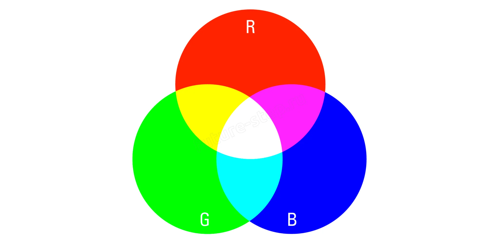
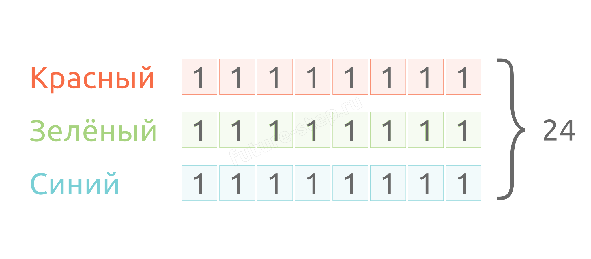
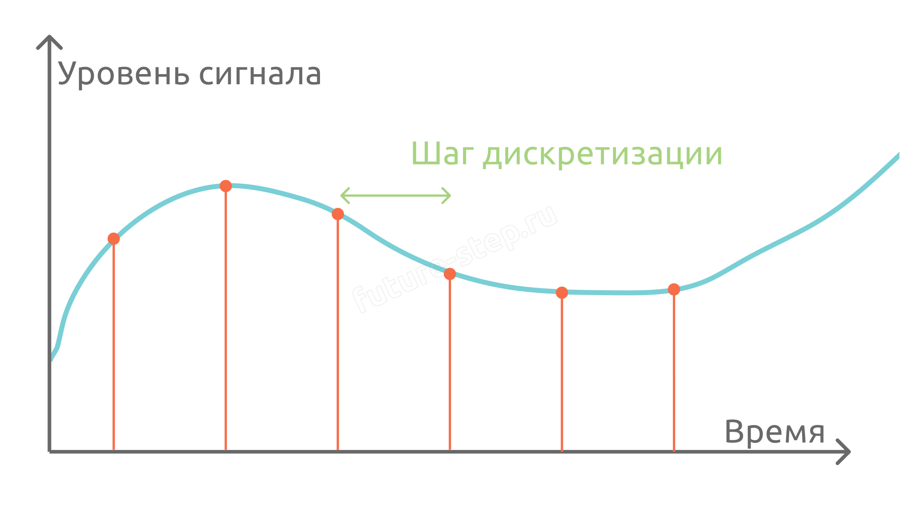

Изображение размером 4×2 пикселя
Теория · Формулы, растровые изображения, звуковые файлы, передача данных
Задание 7 проверяет умение определять объём памяти, необходимый для хранения информации, и вычислять время передачи данных. Все величины связаны общими формулами — достаточно знать исходные данные и подставить их.
💡 Главный принцип: вычисления не должны быть громоздкими. Выделяйте во всех множителях степени двойки — тогда всё сведётся к сложению и вычитанию показателей степеней.
| Единица | Формула перевода в биты |
|---|---|
| 1 байт | 8 бит = 2³ бит |
| 1 Кбайт | 2¹⁰ байт = 2¹³ бит |
| 1 Мбайт | 2¹⁰ Кбайт = 2²⁰ байт = 2²³ бит |
Изображение состоит из пикселей — маленьких квадратных точек. Количество пикселей по горизонтали и вертикали определяет разрешение. Каждый пиксель имеет свой цвет, который кодируется в модели RGB (красный, зелёный, синий).

Глубина цвета (i) — количество бит, используемое для кодирования цвета одного пикселя. Определяет, сколько различных оттенков может отобразить экран.
Пример: в модели RGB используется 24-битное кодирование: по 8 бит на каждый из трёх каналов. Один пиксель весит 3 × 8 = 24 бита. Количество цветов: 2²⁴ ≈ 16,7 миллионов.

🔍 Прозрачность (альфа-канал): иногда вместе с цветом хранится степень прозрачности пикселя. В этом случае глубина пикселя складывается из битов цвета и битов прозрачности: i = iцвет + iпрозрачность. В формуле объёма V = h·w·i используется суммарное значение i.
🔍 Бит контроля чётности: иногда вместе с цветом хранятся дополнительные служебные биты. Например, «на каждые 2 бита цвета дописывается 1 бит контроля чётности». Это означает, что к битам цвета добавляется ещё iцвет / 2 дополнительных бит (с округлением вверх, если число бит цвета нечётное). Полная глубина пикселя: iполн = iцвет + ⌈iцвет / 2⌉. В формуле объёма V = h·w·i используется полная глубина iполн.
Если в условии говорится о сжатии на N процентов, итоговый объём файла уменьшается на N%: Vсжат = V × (1 − N/100).
Звук — это волна, распространяющаяся в пространстве. Чтобы компьютер мог с ней работать, аналоговый сигнал превращают в цифровой с помощью дискретизации.
Дискретизация — процесс преобразования непрерывного аналогового сигнала в набор числовых значений (отсчётов), взятых через равные промежутки времени.

🔍 Уровни дискретизации вместо битов: иногда вместо глубины кодирования в битах указывают количество уровней дискретизации. Это аналог количества цветов в палитре: N = 2ⁱ. Например, «16 уровней» означает i = log₂16 = 4 бита. «2²⁴ уровней» — i = 24 бита. Увидев количество уровней, сразу переводите его в биты по формуле Хартли.
💡 Аналогия: глубина кодирования для звука — то же, что глубина цвета для изображения. Это «вес» одного отсчёта звукового сигнала в битах.
Чем больше каналов, тем больше весит файл: каждый канал — это независимая аудиодорожка.
🔍 Темп воспроизведения: изменение темпа влияет на длительность звучания. Если темп уменьшен в k раз — длительность увеличивается в k раз (запись звучит медленнее и дольше). Если темп увеличен в k раз — длительность уменьшается. Новый объём вычисляется с учётом изменения длительности: Vнов = kнов · tнов · iнов · ηнов.
Если параметры файла меняются независимо, можно не пересчитывать всё через формулы, а использовать метод пропорций: каждый параметр изменяет объём во столько же раз.
Алгоритм: берём исходный объём и последовательно умножаем или делим его на коэффициенты изменения каждого параметра.